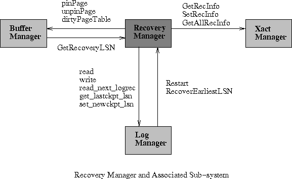
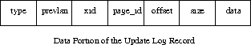
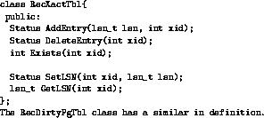

The Recovery Manager interacts mainly with the Log Manager. It creates the log records that are written to the log file. It also interacts with the Buffer Manager from which it obtains the dirty page table, which it logs during a checkpoint. The Transaction Manager returns to it, a transaction table which is again logged during a checkpoint. Figure 1 shows the interaction of the Recovery Manager with other subsystems.

Figure 1: Interaction of the Recovery Manager with other Subsystems
Interaction with the Log Manager:
We derived log record classes of appropriate types, from the base class logrecord, defined by the Log Manager group [LN95]. These sub-classes define the exact format in which information is stored in the various log records. Every sub-class also has an associated 'struct' definition which defines the 'data' portion in the precise format. The update log record has a 'data' portion as shown in Figure 2.

Figure 2: Data Format for the Update Log Record
It should be noted that the data portion for the other derived log records are not exactly as in Figure 2. For example commit and abort log records store only the log type, previous LSN and transaction identifier in their 'data' portions. Physical logging is performed.
The classes derived are:
Interaction with other sub systems:
Two local data structures maintain copies of the transaction and dirty page tables ( refer Figure 3.2). These structures are created during the Analysis phase of recovery.

Figure 3: Transaction Table and Dirty Page Table Definitions